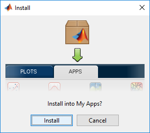
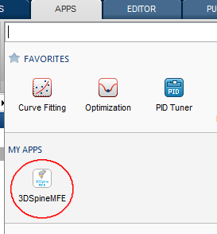

Getting Started
3DSpineMFE is built in MATLAB®. It requires MATLAB 8.4 (R2014b) or superior.
Contents
Dependencies
3DSpineMFE also uses the following software dependencies, all of them are bundled as libraries in the package.
- Geom3D, License: BSD.
- Smooth Triangulated Mesh, License: BSD.
- Toolbox Fast Marching, License: BSD.
- Conversion of conics parameters, License: BSD.
- Write cell array to text file, License: BSD.
- Ellipse Fit (Direct method), License: BSD.
- SplitFV, License: BSD.
- Unify Mesh Normals, License: BSD.
- Mesh Voxelisation, License: BSD.
Installation
This toolbox is packaged as a MATLAB® app, which means that an application installer is provided.
When executing the installer, user will be asked to confirm the installation:

After the installation, toolbox will be visible under Matlab Apps tab:
